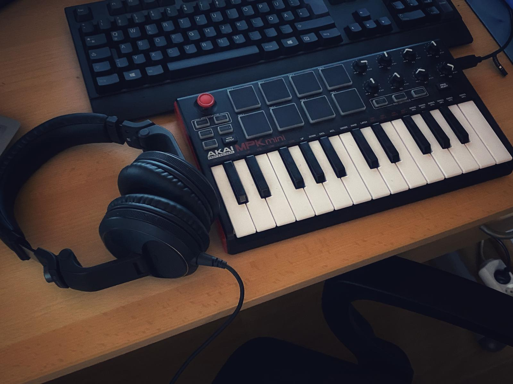
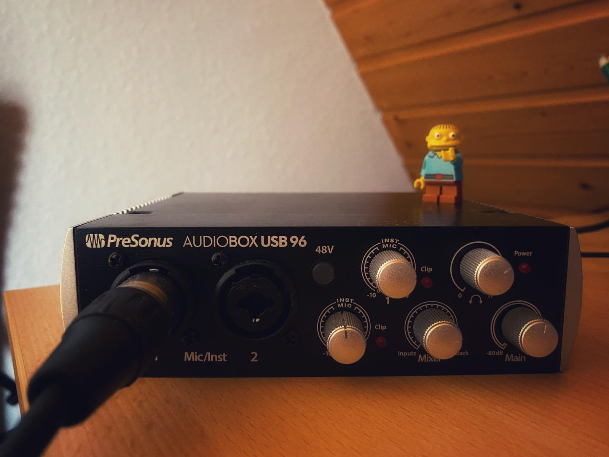
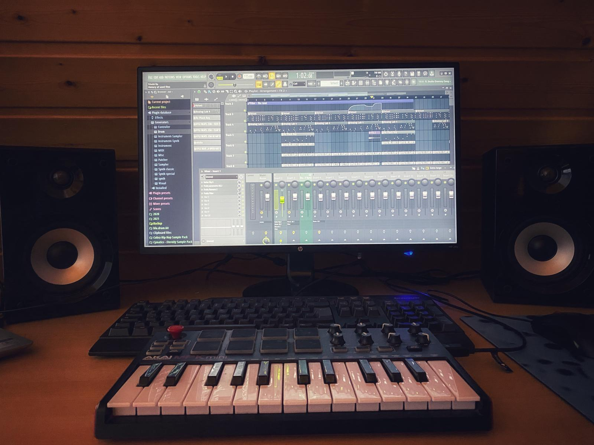
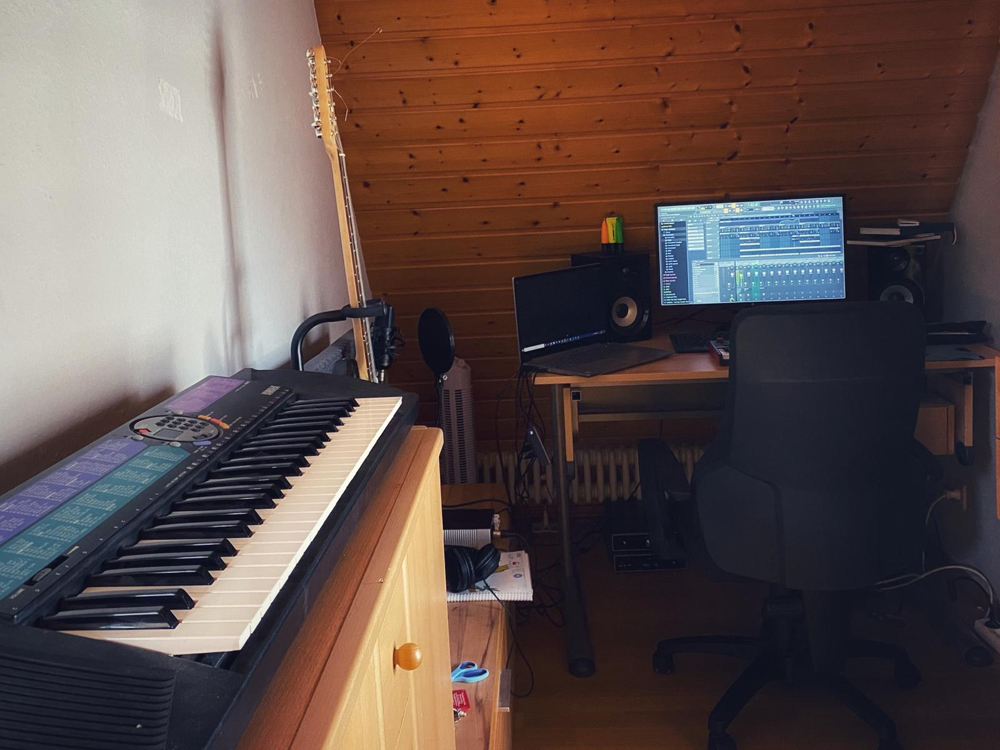

- Portfolio
- About Me
- Contacts
PORTFOLIO 📋
Im folgenden kannst du dir einen kleinen Überblick über meine bisherigen Arbeiten verschaffen.
BEATS 🎵
Anfang 2020 bin ich mit FL-Stduio 20 in die Beatproduktion eingestiegen. Entstanden sind dabei vorwiegend Beats im Trap und Lofi Hip-Hop Bereich.
Veröffentlicht sind diese (bis auf eine Ausnahme) bisher noch nicht, daher habe ich nun hier für euch exklusiv ein paar meiner Beats als Hörprobe bereitgestellt. Viel Spaß damit!
WORKPLACE 🎹
Eindrücke von dem kleinen Ort an dem ich Musik mache.




👉 Wenn du Interesse an Beats hast, mit mir arbeiten möchtest oder ein sonstiges Anliegen hast, freue ich mich hier auf deine Nachricht! :)